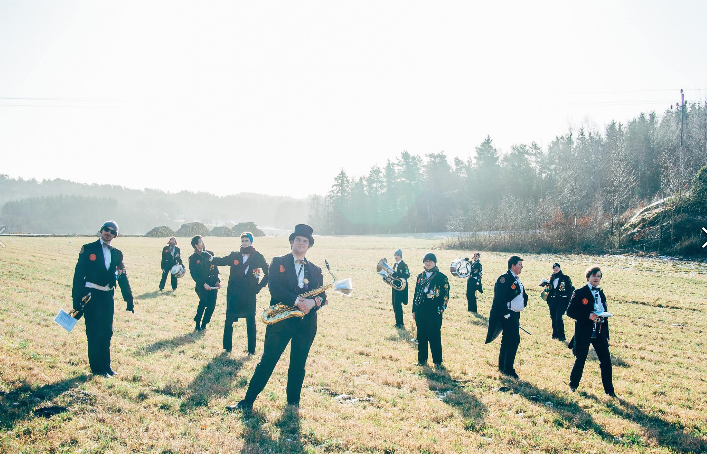
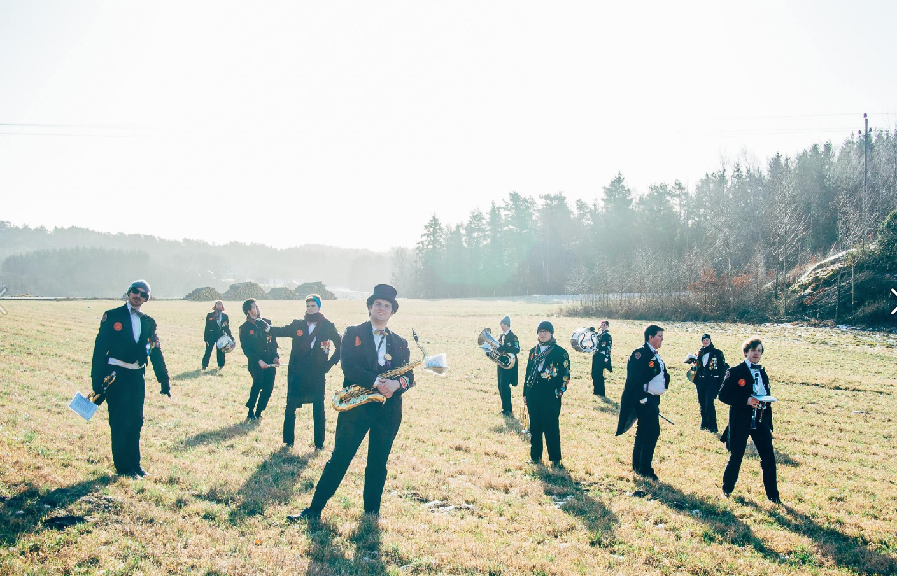
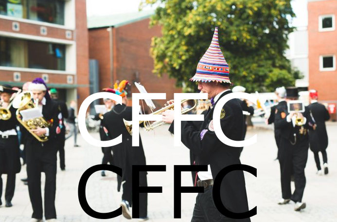
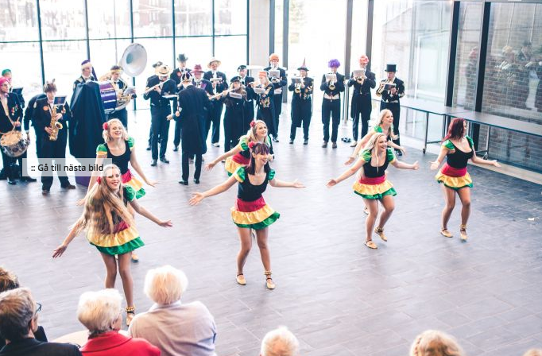

AllianceOrchestret
Ovanliga tillställningar där vi uppträder kan vara invigning av bankomater och Nobelfester. Andra mer vanliga spelningar kan ske i samband med 50-årskalas, oktoberfester, cortéeger, karnevaler och framför allt företagsfester/personalfester. Musik, vimmel och allehanda gückel går alla i ett rasande tempo.
Vår repertoar består mest av marscher i raskt tempo, ofta lite omarrangerade. Samt danslåtar till vilka Chalmersbaletten glatt dansar. Medlemmarnas mundering utgörs av prydda frackar och lustig hatt. Orchestret leds av gückleuren som mellan låtarna har till uppgift att, med viss hjälp av övriga musikanter, försöka underhålla publiken med allehanda magiska och akrobatiska trick och gückel. Som regel lyckas han oftast roa orchestret, ibland publiken och alltid sig själv.
En av de största poängerna är att vi är "hemliga" inför en spelning. Publiken skall inte veta vad som väntar dom. Festen/kalaset har pågått en stund och publiken sitter efter maten och njuter av kaffet och av avecen. Ett förnöjsamt sorl börjar sprida sig i lokalen. Då bryts plötsligt friden av inslaget på en virveltrumma i bakgrunden, varefter Alliancearna spelande kommer inrusande. Publiken visste inte att detta var precis det som dom hoppades skulle hända: oväntad underhållning av högsta klass under kraftig höjning av stämningen. Publiken roas sedan omväxlandes av marscher i snabbt tempo, ibland med sång, danslåtar med baletten och allehanda roliga gückel, som t.ex. det berömda och omtalade tratt-tricket.
Allmän historia
AllianceOrchestret, eller "the Alliance Orchestra of Gothenburg", är en studentorkester och antagligen världens mest förvirrade sådan. AllianceOrchestret bildades redan 1948 av några medlemmar i teknologföreningen C.S.
Idag består den av glada teknologer från Chalmers Tekniska Högskola. Dess medlemmar vimlar runt på krogar, gator och torg, och sprider glädje och hård marschmusik. Orchestrets stora fördel, jämte dess självklara förträfflighet, är dess stora flexibilitet. Vi kan uppträda nästan var, när och hur som helst. Nästan ingen förberedelse krävs för den som anlitar oss. Vi är, tillsammans med Chalmersbaletten, ett utmärkt sätt att höja stämningen på fester och kalas.
En person, eller snarare en legend, som funnits i orchestret väldigt länge, nästan alltid, är Doktor Mombasa som med sina dryga 0.13 ton troligtvis är den tyngste Alliancearen i historien. Han ses oftast runt kalasen och turnéerna, där han spelar standar med stor pompa och entusiasm.